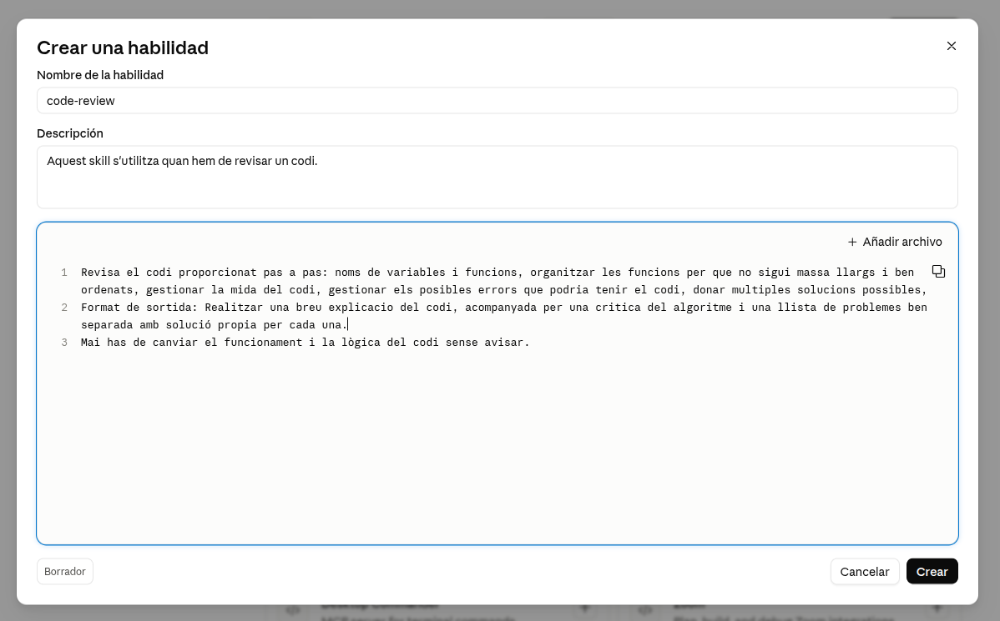
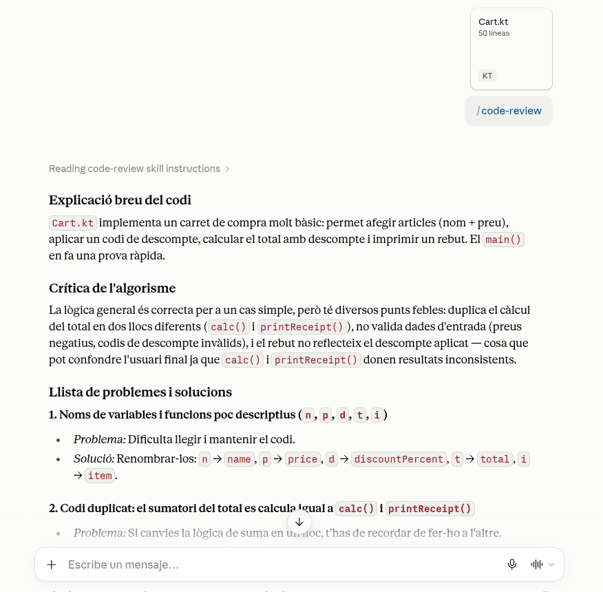
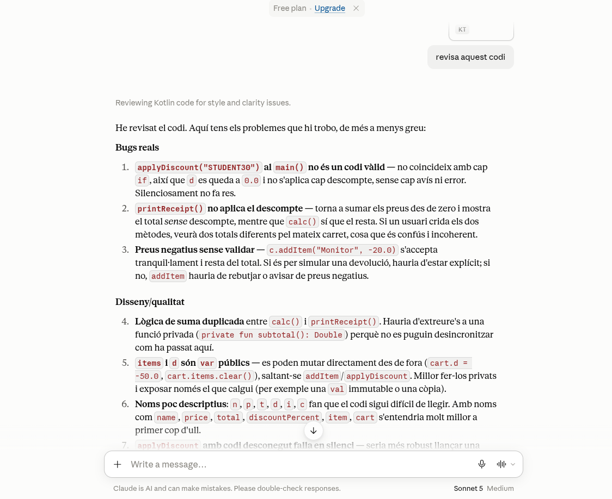
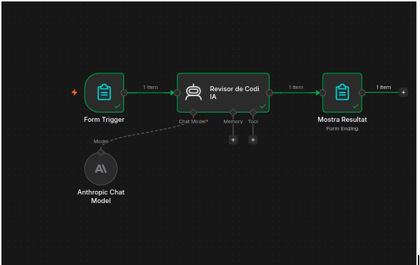
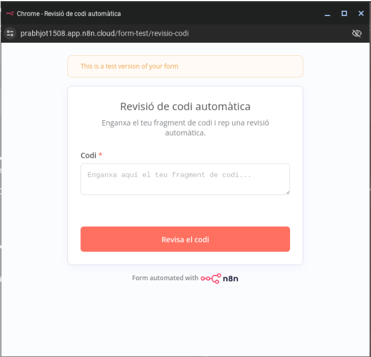
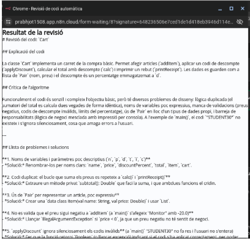
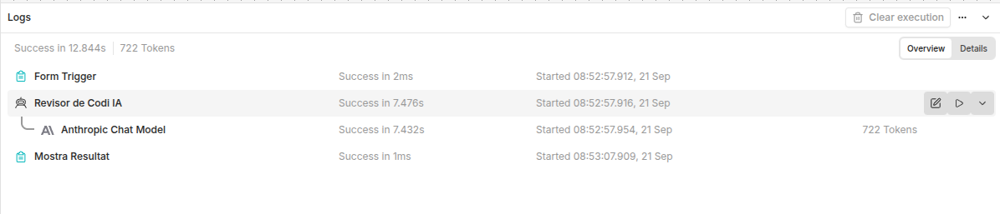
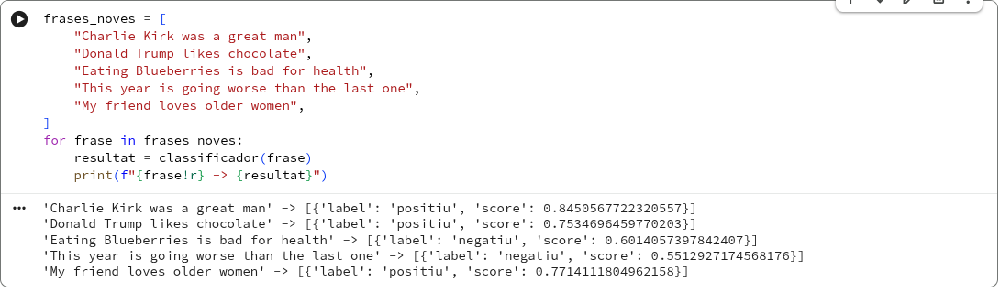

Resum
De què va tractar el workshop
Vam experimentar amb eines d'intel·ligència artificial generativa aplicades a la programació. Les activitats tractaven els tokens, el disseny de prompts, les skills de revisió de codi, els agents amb n8n, els models entrenats i locals, i l'ús responsable de la IA.
Aprenentatges
Què hem après
- La tokenització varia segons el model, l'idioma i els caràcters utilitzats.
- Un prompt estructurat redueix les iteracions i dona més control sobre el resultat.
- Una skill permet repetir criteris de treball, com ara una revisió de codi coherent.
- Un agent connecta una entrada, un model d'IA i una sortida dins d'un flux automatitzat.
- Cal revisar les respostes, detectar biaixos i al·lucinacions i aplicar guardrails.
Activitats
Proves i resultats
| Activitat | Resultat o resposta |
|---|---|
| 1. Anàlisi de tokens | Vam comparar dos prompts sobre estrelles i llenguatges compilats o interpretats amb GPT-4o, Qwen i Llama, primer en anglès i després en altres idiomes. En general, l'anglès va consumir menys tokens. En una de les proves amb Llama, el mateix prompt va passar de 24 tokens en anglès a 30 en castellà i 53 en japonès. També vam observar que els accents i alguns signes poden modificar el recompte. |
| 2. Vibe coding i RASCEF | Havíem de generar un formulari de contacte amb validació i missatge de confirmació. Amb vibe coding van caldre sis iteracions; amb un prompt RASCEF, només una. No vam arribar al límit de tokens. El vibe coding va ser més ràpid per començar, però el resultat necessitava més correccions; RASCEF exigia més preparació, però oferia més control. |
| 3. Skill de revisió de codi | La skill havia de revisar noms de variables i funcions, mida de les funcions, errors, comentaris, duplicacions i convencions. La sortida es dividia en problemes crítics, millores i estil, sense canviar la lògica de negoci sense avisar. Vam comprovar que l'assistent podia activar-la automàticament quan el tema del xat era semblant. |
| 4. Miniagent amb n8n | El flux proposat era Form Trigger → AI Agent → Form completion. El formulari rep el codi, l'agent aplica la skill i el node final mostra o desa la revisió. La pestanya d'execucions permet observar què entra i què surt de cada node. Pendent: afegir les captures i les respostes finals. |
| 5. Model de text a Colab | L'activitat consistia a entrenar un classificador positiu/negatiu, provar cinc frases noves i analitzar almenys un resultat incorrecte o amb una confiança propera al 50 %. Pendent: incorporar els resultats del notebook. |
| 6. Model local amb Isard | S'havia d'instal·lar Ollama o LM Studio en un escriptori virtual, executar un model petit i comparar tres respostes amb un model al núvol en velocitat, qualitat i facilitat d'ús. Pendent: afegir la comparació i les captures. |
| 7. Reglament Europeu d'IA | La proposta era resumir l'enfocament basat en el risc, els nivells de risc, els terminis i les obligacions de les empreses en una infografia o presentació generada amb una eina visual d'IA. Pendent: afegir el material visual final. |
Contingut gràfic
Captures de les activitats







